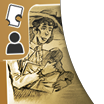
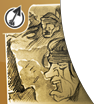
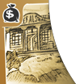
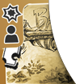
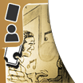
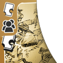

BANG!
Les cartes BANG! permettent de tirer sur un

et de réduire les points de vie des autres joueurs. Les cartes BANG! ne peuvent toucher que des joueurs situés à portée de tir ! Un seul BANG! par tour est permis.

Raté !
Si vous êtes touché par un
, vous pouvez jouer une carte Raté ! (et ce, même si ce n'est pas votre tour !) pour annuler [

] le tir. Dans le cas contraire, vous perdez un point de vie. Si vous perdez votre dernier point de vie, vous quittez la partie, à moins de pouvoir utiliser une Bière "in extremis".

Bière
Jouez cette carte devant vous pour regagner un point de vie. BIÈRE peut aussi être utilisée "in extremis" si vous perdez votre dernier point de vie. BIÈRE n'a aucun effet lorsqu'il ne reste plus que 2 joueurs.

Braquage !
Vous permet de "tirer une carte" (voler) d'un "joueur à une distance 1". Cette distance est modifiée exclusivement par des cartes telles que la carte MUSTANG et/ou la carte LUNETTE. En mode Normal, vous pouvez jouer cette carte sur vous-même en la posant au centre de la table.

Coup de foudre
Jouez cette carte contre "n'importe quel joueur" pour le/la forcer à défausser une carte, quelle que soit la distance. En mode Normal, vous pouvez jouer cette carte sur vous-même en la posant au centre de la table.

Duel
Défiez n'importe quel autre joueur, quelle que soit la distance. Le joueur défié peut jouer une carte BANG!, sur laquelle vous pouvez jouer une carte BANG! et ainsi de suite : le premier joueur qui n'a plus de carte BANG! à défausser perd un point de vie et le duel prend fin.

Indiens !
Chaque joueur, à l'exception de celui qui a joué cette carte, doit répliquer avec une carte BANG! ou perdre un point de vie.

Magasin
Quand vous jouez cette carte, chaque joueur en reçoit une ! En commençant par vous et dans le sens des aiguilles d'une montre, chaque joueur choisit l'une des cartes tirées et la place dans sa main.

Convoi
Tirez deux cartes du sommet de la pioche.

Diligence
Tirez trois cartes du sommet de la pioche.

Gatling
La Gatling tire un
sur "tous les autres joueurs", quelle que soit la distance. La Gatling n'est pas considérée comme une carte BANG!. Durant votre tour, vous pouvez jouer autant de Gatling que vous le désirez, mais pas plus d'une carte BANG!.

Saloon
Cette carte restitue un point de vie (si cela est possible) à tous les joueurs, vous y compris. Vous ne pouvez pas jouer une carte Saloon "in extremis" : le Saloon n'est pas une Bière !

Whisky (DODGE CITY)
Vous devez défausser une carte supplémentaire avant d'utiliser celle-ci. Jouez cette carte devant vous pour regagner 2 points de vie.

Tequila (DODGE CITY)
Vous devez défausser une carte supplémentaire avant d'utiliser celle-ci. Jouez cette carte devant vous, ou devant n'importe quel joueur pour obtenir ou donner 1 point de vie.

Coup de poing (DODGE CITY)
Même effet qu'un BANG! [
], mais uniquement à une distance de 1 ; la carte COUP DE POING ne compte pas comme un BANG!.

Springfield (DODGE CITY)
Vous devez défausser une carte supplémentaire avant d'utiliser celle-ci. Jouez cette carte sur n'importe quel autre joueur pour tirer un
. La carte SPRINGFIELD ne compte pas comme un BANG!.

Esquive (DODGE CITY)
Même que RATÉ ! [
], mais cela vous permet aussi de tirer une carte supplémentaire [

].

Pianiste (DODGE CITY)
Vous devez défausser une carte avant d'utiliser celle-ci. Jouez cette carte sur n'importe quel joueur pour voler une carte
. En mode Normal, vous pouvez aussi jouer cette carte sur vous-même en la jouant au centre de la table.

Bagarre (DODGE CITY)
Vous devez défausser une carte supplémentaire avant d'utiliser celle-ci. Jouez cette carte devant vous pour obliger tous les autres joueurs à défausser une carte.